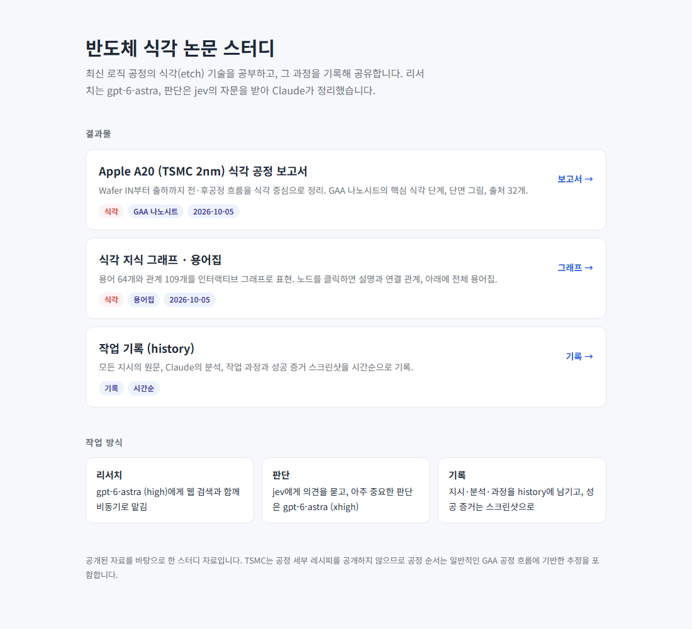
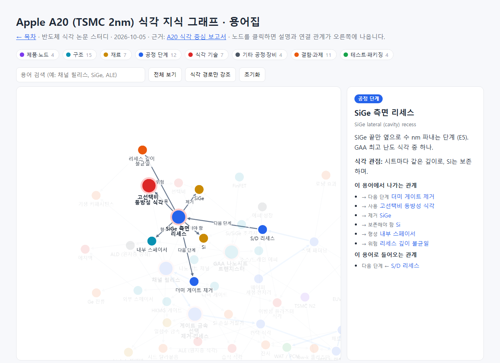

항목 #13–#15 · 2026-10-05 21:21 ~ 21:40 · Claude Artifact로 먼저 게시한 뒤 GitHub Pages로 옮겼다. 보안 점검에서 커밋에 드러난 개인 메일을 no-reply 주소로 바꿨다.
#13
보고서 · 지식 그래프를 Artifact 공유 페이지로 게시
지시 (원문)
Artifact로 공유 페이지 만들어줘
분석 (Claude의 정리)
A20 식각 보고서와 용어집·지식 그래프를 claude.ai Artifact로 게시해 링크로 공유할 수 있게 한다.
보고서를 첫 화면으로, 지식 그래프를 같은 Artifact 안의 두 번째 페이지로 넣고, 두 페이지가 서로 링크되게 한다.
과정
게시용 사본을 임시 폴더에 준비 (프로젝트 원본은 그대로 둠).
보고서: Artifact가 바깥 페이지 틀을 자동으로 씌우므로 html/head/body 태그 제거
어떤 기기에서도 같은 글꼴로 보이게 한국어 웹폰트(Noto Sans KR) 추가, 좌우 여백 16px 확보
지식 그래프 → 보고서로 가는 링크를 Artifact 안의 주소로 수정
민감정보 검사 → 검출 없음. 게시 실행 → 성공 (아이콘: chip, 버전 1).
휴대폰 폭(400px) 화면 확인 → 오른쪽이 잘려 보임. 원인을 확인해보니 데스크톱 Chrome은 창을 약 570px보다 좁게 못 만들어서 캡처만 잘린 것이었음. 실제 측정값: 화면 폭 572px, 내용 폭 557px → 가로 넘침 없음. 잘못 보이는 스크린샷은 지우고 데스크톱 화면으로 다시 촬영.
공유 수단을 GitHub Pages로 바꾼다: 프로젝트를 GitHub 저장소로 올리고, Pages 사이트로 게시한다.
공개 게시라 되돌리기 어려우므로 공개 여부·저장소 이름·올릴 범위를 사용자에게 먼저 확인한다. 올릴 범위는 jev에게 자문.
.env(API 키)는 어떤 경우에도 올리지 않는다.
과정
GitHub CLI 설치·로그인 상태 확인 → 사용 가능.
jev 자문 (올릴 범위):
history.html·스크린샷 포함 → 0.70 (포함)
원본 리서치 마크다운·실행 로그 포함 → 0.48 (경계 → 제외)
도우미 스크립트·CLAUDE.md 포함 → 0.61 (포함)
첫 화면 → 목차 페이지 새로 만들기 (0.90)
사용자 확인: 공개 저장소, 이름 etch-paper-study, jev 의견대로 범위.
목차 첫 화면 index.html 작성. 보고서·지식 그래프·history에 "← 목차" 링크 추가.
.gitignore 작성 (.env, 원본 리서치·로그 제외). 올릴 파일 17개에서 개인 경로·계정명 검색 → 없음. 올릴 파일 안에 API 키 값이 들어있는지 검사 (값은 출력하지 않음) → 없음.
커밋 → 공개 저장소 생성·푸시 → Pages 켜기 (main 브랜치 루트).
사이트 빌드 완료 확인 (status: built).
실제 사이트 점검: 목차·보고서·지식 그래프·history·이미지 모두 200 (정상). .env, 원본 리서치는 404 (올라가지 않음 확인). 지식 그래프도 실제 사이트에서 정상 동작.
결과 / 증거
성공 GitHub Pages 사이트 게시 완료: https://<계정>.github.io/etch-paper-study/ (계정명은 기록 규칙에 따라 가림).

history_img/20261005_213228_github_pages_home.png — 실제 사이트의 목차 첫 화면

history_img/20261005_213228_github_pages_graph.png — 실제 사이트에서 연 지식 그래프 ("SiGe 측면 리세스" 포커스)
#15
커밋 기록의 개인 메일 주소 가리기
지시 (원문)
게인 메일 주소 암호화 해서 배포. CLAUDE.md 에도 마찬가지.
(이후 진행 지시: "다시 진해" / "다시 진행해줘.")
분석 (Claude의 정리)
직전 보안 점검(사용자 요청으로 기록 생략)에서 커밋 작성자 정보에 개인 Gmail 주소가 공개되어 있음을 발견함. 그 외 API 키·IP·토큰·로컬 경로는 공개 파일 어디에도 없었음.
개인 메일이 드러나지 않게 GitHub이 제공하는 no-reply 주소로 바꿔 다시 배포한다. 이미 올라간 커밋도 고쳐야 하므로 기록을 다시 쓰고 강제 푸시가 필요하다.
같은 일이 다시 생기지 않도록 CLAUDE.md에 규칙을 추가한다.
과정
이 저장소의 커밋 메일을 GitHub no-reply 주소(<id>+<계정>@users.noreply.github.com)로 설정. 이 저장소에만 적용.
기존 커밋 2개의 작성자·커미터 메일을 no-reply 주소로 다시 씀 (로컬).
강제 푸시와 기록 정리 단계가 Claude Code 자동 모드에서 "되돌리기 어려운 git 작업"으로 차단됨 → 우회하지 않고 사용자에게 승인 요청. 보류
사용자가 자동 모드를 끄고 진행을 지시 → 강제 푸시 승인·실행 성공.
CLAUDE.md에 "개인 메일 주소 보호" 규칙 추가 (커밋 전 메일 확인, 푸시 전 기록 확인, 기록에 메일 적지 않기, 강제 푸시는 사용자 승인 후).
이 기록과 규칙을 커밋·푸시하고, GitHub에 올라간 모든 커밋의 메일을 확인.
결과 / 증거
성공 저장소의 모든 커밋이 no-reply 주소만 사용. 개인 메일은 공개 기록에서 사라짐.
참고: 고치기 전 잠시 공개되어 있었으므로 그 사이 저장소를 복제한 사람이 있다면 옛 기록이 남아 있을 수 있음. GitHub 설정의 "Block command line pushes that expose my email"을 켜면 재발을 막을 수 있음 (사용자가 직접 설정).